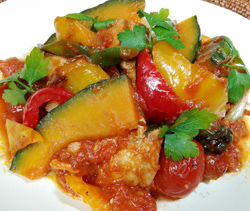

鶏肉とカボチャとパプリカのイタリア風煮込み
- 調理時間：60 分
- （一人当たり）
- カロリー：277kcal
- たんぱく質：16.9g
- 脂質：13.2g
- 炭水化物：21.7g
- 塩分：1.2g


＜2人分＞
- 鶏肉
- 1枚(150g位)
- 片栗粉
- 少々
- カボチャ
- 150ｇ
- パプリカ（赤・黄色）
- 各1/4個
- トマト
- 2～3個
- ニンニク
- 1片
- オリーブオイル
- 少々
- ローリエ
- 1枚
- 白ワイン
- 50ml
- 塩、コショウ
- 少々
- イタリアンパセリ
- 適宜


- 鶏肉は食べやすい大きさに切り、塩コショウ（分量外）を振り、下味をつける。
表面に片栗粉をうすくまぶしておく。 - カボチャ、パプリカは乱切りにする。トマトは2～4等分位に切っておく。
ニンニクは皮をむいて、粗みじん切りにする。 - フライパンにニンニクとオリーブオイルをいれて火にかける、ニンニクの香りがでたら鶏肉をいれて両面焼く。
途中、白ワインを加えて焼き色をつける。 - カボチャ、パプリカを入れて炒め合わせ、トマトと水100ml、ローリエをいれて煮込む。
- カボチャが柔らかくなったら、塩コショウで味をととのえ、器に盛り付けイタリアンパセリを飾る。
鶏肉とカボチャとパプリカの
イタリア風煮込み
トマトが赤くなると医者が青くなる、ということわざがあるようにトマトにはたくさんの栄養素が含まれています。冬至にカボチャを食べると風邪をひかないとも言われ、こちらもβカロテンやビタミンCが豊富な野菜の代表です。双方に含まれるβカロテンは粘膜を丈夫にする、かぜに対する抵抗力をつける、目の疲れを癒す働きなどがあり、体の抵抗力を高めて病気にかかりにくくする効果があります。その他、抗酸化作用によって、活性酸素を除去し、ガン細胞の発生を防ぐとともに、免疫機能を高めてくれます。相乗効果として、ビタミンCは体内で発ガン物質が作られるのを防ぐ働きをも担っています。
不安な世の中ではありますが、身体の根本をつくる食事を疎かにしないよう心がけましょう。